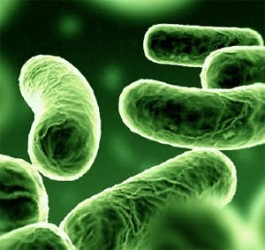

The idea of using microbial cells in an attempt to produce electricity was first conceived at the turn of the nineteenth century. M. Potter was the first to perform work on the subject in 1911.A professor of botany at the University of Durham, Potter managed to generate electricity from E. coli, but the work was not to receive any major coverage. In 1931, however, Barnet Cohen drew more attention to the area when he created a number of microbial half fuel cells that, when connected in series, were capable of producing over 35 volts, though only with a current of 2 milliamps.
University of Durham
More work on the subject came with a study by DelDuca et al. who used hydrogen produced by the fermentation
of glucose by arfjshdkjahsdjahkjsdhakjshdjashdkjasClostridium butyricum as the reactant at the anode of a hydrogen and air fuel cell. Though the cell functioned, it was found to be unreliable owing to the unstable nature of hydrogen production by the micro-organisms.Although this issue was later resolved in work by Suzuki et al. in 1976 the current design concept of an MFC came into existence a year later with work once again by Suzuki.
By the time of Suzuki's work in the late 1970s, little was understood about how microbial fuel cells functioned; however, the idea was picked up and studied later in more detail first by MJ Allen and then later by H. Peter Bennetto both from King's College London. Bennetto saw the fuel cell as a possible method for the generation of electricity for developing countries.

Escherichia coli
His work, starting in the early 1980s, helped build an understanding of how fuel cells operate, and until his retirement, he was seen by many as the foremost authority on the subject.
It is now known that electricity can be produced directly from the degradation of organic matter in a microbial fuel cell, although the exact mechanisms of the process are yet to be fully understood. Like a normal fuel cell, an MFC has both an anode and a cathode chamber. The anoxic anode chamber is connected internally to the cathode chamber via an ion exchange membrane with the circuit completed by an external wire.
In May 2007, the University of Queensland, Australia, completed its prototype MFC, as a cooperative effort with Foster's Brewing. The prototype, (a 10L design), converts brewery wastewater into carbon dioxide, clean water, and electricity. With the prototype proven successful[citation needed], plans are in effect to produce a 660 gallon version for the brewery, which is estimated to produce 2 kilowatts of power. While it is a negligible amount of power, the production of clean water is of utmost importance to Australia, for which drought is a constant threat.
-
4th International MFC Conference

-
Different types of MFCs

-
Robo Insect Using MFC for Power

-
Schematic of MFCs

-
Waste Water Plant in Australia using MFCs

-
Search
- Themes
-
Share
-
-
Quick Links
History


Copyright ©
Sunbeam Schools, Lahartara
Designed by Arfat Salman and Rishabh Jain